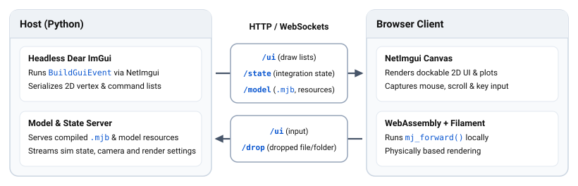
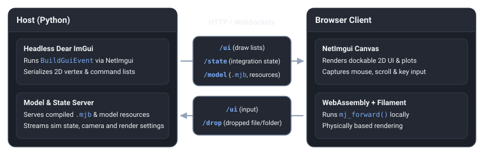

Web 查看器#
备注
本页由 AI（Claude Sonnet）根据 MuJoCo 官方英文文档（2026-11-16 版）翻译，仅供学习参考；如有出入，以英文原版为准。术语对照见资料包中的 术语表.md 。
Studio 提供两种在 Web 浏览器中运行的方式，区别在于物理仿真和用户代码在哪里执行：
MuJoCo Live （live.mujoco.org）：将 C++ Studio 直接编译为 WebAssembly，使整个仿真器和渲染器（renderer）都在客户端的静态页面上运行，无需任何安装。
MuJoCo Live (live.mujoco.org): Compiles C++ Studio directly to WebAssembly so the entire simulator and renderer run client-side on a static page with zero install.Python
WebViewer：在工作站或远程服务器上以无头方式运行你的 Python 仿真和自定义插件（plugin）（宿主机上无需 GPU 或窗口系统），并将 UI 绘制列表和仿真状态流式传输到浏览器。PythonWebViewer: Runs your Python simulation and custom plugins headlessly on a workstation or remote server (no GPU or window system required on the host) and streams UI draw lists and simulation state to the browser.
MuJoCo Live#
MuJoCo Live （live.mujoco.org）是 C++ Studio 应用的独立浏览器构建版本，在浏览器标签页内运行物理仿真、Dear ImGui 用户界面和 Filament 渲染（rendering），无需后端服务器：
拖放模型：将独立的
.xml、.mjb，或自包含的.mjz/.zip压缩包直接拖放到画布上。Drag-and-drop models: Drop a standalone.xml,.mjb, or self-contained.mjz/.ziparchive directly onto the canvas.可分享的模型 URL（
?model=）：使用https://、http://或github:简写形式传入?model=<url>：Shareable model URLs (?model=): Pass?model=<url>usinghttps://,http://, or thegithub:shorthand:https://live.mujoco.org/?model=github:google-deepmind/mujoco/main/model/humanoid/humanoid.xml
通过 URL 加载 XML 模型时，MuJoCo Live 会借助
mju_getXMLDependencies发现其传递依赖的网格（mesh）、纹理和<include>文件，并在编译之前并行预取它们。MuJoCo Menagerie 页面上的每个机器人缩略图都使用这种github:语法直接链接到live.mujoco.org，而访问值为空的?model=会打开一个空白场景，而不加载默认的欢迎模型。When loading an XML model by URL, MuJoCo Live discovers transitive meshes, textures, and<include>files viamju_getXMLDependenciesand prefetches them in parallel before compiling. Every robot thumbnail on the MuJoCo Menagerie page links directly tolive.mujoco.orgusing thisgithub:syntax, and visiting?model=with an empty value opens a blank scene without loading the default welcome model.
关于 Emscripten WebAssembly 构建和 C++ 绑定的详情，请参见 C++ 中的 WebAssembly 构建。
WebViewer#
远程桌面工具（如 Chrome Remote Desktop、X11 转发，或需要宿主机配备 GPU 并流式传输压缩视频帧的服务端视频编码器）与此不同，WebViewer （web_viewer.py）在宿主机 CPU 上以无头方式运行，没有原生图形或窗口系统依赖，并通过单个 HTTP/WebSocket 端口将 3D 光栅化卸载到客户端浏览器。只有当用户代码自身需要离屏渲染相机观测时，才需要宿主机 GPU。
WebViewer (web_viewer.py) runs headless on the host
CPU with no native graphics or windowing dependencies and offloads 3D rasterization to the client browser over a single
HTTP/WebSocket port. A host GPU is only needed if user code itself renders offscreen camera observations.启动#
可以从命令行启动 WebViewer ，也可以通过 launch_web 从 Python 启动。所有内容都通过单个 http_port 提供服务，该端口默认为 0 ，表示选择第一个 >= 8080 的空闲端口。在 ViewerConfig 上设置 open_browser=True 可自动打开浏览器标签页；在远程机器上运行时，请通过 ssh -L 8080:localhost:8080 转发该端口：
WebViewer from the command line or from Python via launch_web. Everything is served over a
single http_port, which defaults to 0 and selects the first free port >= 8080. Set open_browser=True on
ViewerConfig to open a browser tab automatically, and forward the port via ssh -L 8080:localhost:8080 when
running on a remote machine:python -m mujoco.studio.viewer --model=humanoid.xml --gfx=web
from mujoco.studio import app as studio_app
from mujoco.studio import launch_web
from mujoco.studio import viewer_protocol
config = viewer_protocol.ViewerConfig(title='MuJoCo Studio')
launch_web.run(
config,
model_path='humanoid.xml',
plugins=[studio_app.App(), *studio_app.SIM_PLUGINS],
)
与 launch_native 类似，当把 WebViewer 附加到现有的仿真循环时，可通过 launch_web.launch 使用非阻塞模式；参见 custom_sim_loop.py。
launch_web.launch when
attaching WebViewer to an existing simulation loop; see custom_sim_loop.py.studio_app.App 本身是可选的：省略它会得到一个干净的 3D 视口，由你自己的 插件 定义整个界面。例如，overview/slideshow.py 中的交互式幻灯片示例就在不使用 studio_app.App 的情况下运行了一个自定义查看器，它将内置的回放和历史插件与一个极简的标题卡片、时间轴拖动以及后台场景预取结合在一起。
studio_app.App is itself optional: omitting it gives you a clean 3D viewport where your own plugins define the entire interface. For example, the interactive slideshow sample in
overview/slideshow.py runs a
custom viewer without studio_app.App, pairing the built-in playback and history plugins with a minimal caption
card, timeline scrubbing, and background scene prefetching.流式传输架构#




Python 的 消息 类型（Snapshot 和 Event ）只在 Python 仿真端和查看器端点之间传递——宿主机到浏览器的线路协议是固定的，与自定义插件的消息类无关：
Snapshot and Event) only travel between the Python simulation and
viewer endpoints—the host-to-browser wire protocol is fixed and independent of custom plugin message classes:UI 流（
/ui）：宿主机在无头的 Dear ImGui 上下文中执行studio_app.App和自定义 PythonViewerPlugin窗口的所有BuildGuiEvent处理函数，并通过 Studio 的 UI 线路编解码器流式传输紧凑的 2D 顶点/索引绘制列表。由于大多数 UI 面板和控件在帧与帧之间保持静态，该编解码器采用按窗口的增量压缩——将每个窗口的顶点、索引和绘制命令缓冲区与上一帧比较，只传输发生变化的元素——使 CPU 开销和带宽保持在极低水平（每秒几千字节），同时以浏览器原生分辨率渲染清晰的矢量 UI。在浏览器中捕获的鼠标点击、拖动、滚轮事件和键盘输入会通过/ui回传给宿主机。UI Stream (/ui): The host executes allBuildGuiEventhandlers fromstudio_app.Appand custom PythonViewerPluginwindows in a headless Dear ImGui context and streams compact 2D vertex/index draw lists via Studio’s UI wire codec. Because most UI panels and widgets remain static from frame to frame, the codec applies per-window delta compression—comparing each window’s vertex, index, and draw-command buffers against the previous frame and transmitting only the elements that changed—keeping CPU overhead and bandwidth minimal at a few kilobytes per second while rendering crisp vector UI at native browser resolution. Mouse clicks, drags, scroll wheel events, and keystrokes captured in the browser flow back over/uito the host.场景与模型流（
/model，/state，/drop）：模型加载时，宿主机通过/model提供编译后的 mjModel （.mjb）和打包的资源，并通过/state以“最新者优先”的语义流式传输每帧的积分状态、相机变换、mjvOption 标志、mjvPerturb 状态和extra_geoms，使浏览器的 WebAssembly 客户端能够运行 mj_forward 并通过 Filament WebGL 2.0 进行渲染。仿真插件通过PreloadModelEvent提前宣告的模型（例如播放列表中接下来的场景）也会按内容哈希提供，浏览器会在后台下载它们，这样之后切换到其中某个模型时就无需再下载。拖放到浏览器画布上的模型文件或文件夹会通过/drop上传到宿主机，并在仿真线程上触发LoadModelEvent。Scene & Model Streams (/model,/state,/drop): When a model loads, the host serves the compiled mjModel (.mjb) and bundled resources over/model, and streams per-frame integration state, camera transforms, mjvOption flags, mjvPerturb state, andextra_geomsover/statewith latest-wins semantics so the browser’s WebAssembly client can run mj_forward and render via Filament WebGL 2.0. Models that a simulation plugin announces ahead of time withPreloadModelEvent(for example the next scenes of a playlist) are also served by content hash, and browsers download them in the background so that switching to one of them later needs no download. Model files or folders dropped onto the browser canvas upload over/dropto the host and triggerLoadModelEventon the simulation thread.
多查看器会话#
多个浏览器可以同时连接到同一个 WebViewer URL，并由一个 角色（Role） 指示器 UI 协调：
WebViewer URL simultaneously, coordinated by a Role indicator UI:控制者与旁观者：同一时刻只有 一个 浏览器持有 控制者 角色（
CONTROLLING），它拥有/ui流，可以看到并操作 Dear ImGui 面板、扰动刚体（body），并可以将模型拖放到页面上。其他浏览器作为 旁观者 （SPECTATING）加入：它们只接收/model数据包和/state仿真流，没有/ui流量，并且可以在角色 UI 中把各自的本地相机切换为Free: tumble、Free: wasd和Follow Controller之一。Controller vs. Spectators: Only one browser at a time holds the Controller role (CONTROLLING), which owns the/uistream, sees and interacts with the Dear ImGui panels, perturbs bodies, and can drag-and-drop models onto the page. Additional browsers join as Spectators (SPECTATING): they receive only the/modelbundle and/statesimulation stream with no/uitraffic, and can switch their local camera in the Role UI betweenFree: tumble,Free: wasd, andFollow Controller.控制队列与抢占控制：旁观者可以在角色 UI 中点击 Request control 加入先进先出（FIFO）的控制队列，此时控制者的角色指示器会以橙色闪烁并显示等待人数；也可以点击 Leave Queue 取消。当控制者点击 Release control 或关闭其标签页时，服务器会把控制权授予队列首位。排队中的旁观者也可以点击 Steal Control 插队并立即获得控制权，同时把当前控制者降级为旁观者。
Control queue & Steal Control: A spectator can click Request control in the Role UI to join the FIFO control queue, pulsing the controller’s Role indicator orange with the waiting count, or click Leave Queue to cancel. When the controller clicks Release control or closes their tab, the server grants control to the head of the queue. Queued spectators can also click Steal Control to jump the queue and take control immediately, demoting the current controller to a spectator.最大旁观者数与出站带宽：由于服务器会向每个已连接的浏览器流式传输 60 Hz 的
/state负载，因此总出站仿真带宽会随查看者数量增长，并在角色 UI 中以Sim Data Rate\ `` 的形式报告。控制者可以在运行时将 **Max Spectators** 在 ``\ 0\ `` 到 ``\ 32\ `` 之间调整（默认 ``\ 8），以限制出站仿真状态流量；超出的旁观者会按最新连接者优先的顺序被断开，并显示 Session is full 提示，然后自动重试，直到有空位释放。Max spectators & outgoing bandwidth: Because the server streams the 60 Hz/statepayload to every connected browser, total outgoing simulation bandwidth scales with the viewer count and is reported in the Role UI asSim Data Rate. The controller can adjust Max Spectators at runtime from0to32(default8) to cap outgoing simulation state traffic; excess spectators are disconnected newest-first with a Session is full notice and retry automatically until a slot frees up.空闲断开与重连：隐藏或处于后台的浏览器标签页会暂停其渲染循环并停止发送流量。如果在控制队列中有人等待时，控制者标签页 90 秒 内没有发送任何输入，则控制权会被自动移交；如果旁观者标签页 5 分钟 内没有发送 30 秒一次的心跳，它就会被断开以释放其名额，并在标签页再次获得焦点时自动重连。每个客户端还会确认
/state帧，因此在慢速链路上最多只有一个状态负载在传输中；如果 Python 进程停止或卡住，客户端会显示 Viewer server is not reachable 提示。Idle disconnects & reconnection: Hidden or backgrounded browser tabs pause their rendering loop and stop sending traffic. If a controller tab sends no input for 90 seconds while someone is waiting in the control queue, control is automatically handed off; if a spectator tab sends no 30-second heartbeat for 5 minutes, it is disconnected to free its slot and reconnects automatically when the tab is focused again. Each client also acknowledges/stateframes so at most one state payload is in flight over slow links, and displays a Viewer server is not reachable notice if the Python process stops or stalls.
警告
WebViewer 提供的是没有认证和加密的明文 HTTP 和 WebSocket 服务，并且目前监听所有网络接口——任何能够访问该端口的人都可以获取或抢占控制权、上传文件，并查看宿主机的日志、异常消息和文件路径。在易用性和访问控制方面的改进仍在进行期间，WebViewer 是一个开发工具，不提供针对不可信网络的安全保证。请在 localhost 上、可信网络中，或通过经过认证的隧道（例如 ssh -L 8080:localhost:8080）运行它。
WebViewer serves plain HTTP and WebSockets without authentication or encryption and currently listens on all
network interfaces—anyone who can reach the port can take or steal control, upload files, and view host logs,
exception messages, and file paths. While usability and access-control improvements are in progress, WebViewer is
a development tool and will not come with security guarantees against untrusted networks. Run it on localhost,
on trusted networks, or through an authenticated tunnel such as ssh -L 8080:localhost:8080.浏览器沙箱#
与原生桌面应用不同，Web 浏览器在安全沙箱中执行页面，该沙箱会限制多线程、网络请求、文件系统访问和内存，并且 WebAssembly 模块在页面存续期间会一直驻留，而不是每个会话都启动一个全新的操作系统进程。下面各点概述了这些浏览器行为如何影响
WebViewer 和 MuJoCo Live ：
WebViewer and MuJoCo Live:COOP/COEP 头与 WebAssembly 多线程 （两者
WebViewer和MuJoCo Live）：在 WebAssembly 中，C++ 线程（POSIXpthreads）由通过SharedArrayBuffer共享内存的浏览器 Web Worker 支撑。为了缓解旁路计时攻击，浏览器会阻止SharedArrayBuffer，除非页面是 跨源隔离的 ——也就是说 HTTP 服务器要发送Cross-Origin-Opener-Policy: same-origin（COOP）和Cross-Origin-Embedder-Policy: require-corp（COEP）。COOP/COEP headers and WebAssembly multithreading (bothWebViewerandMuJoCo Live): In WebAssembly, C++ threads (POSIXpthreads) are backed by browser Web Workers that share memory throughSharedArrayBuffer. To mitigate side-channel timing attacks, browsers blockSharedArrayBufferunless the page is cross-origin isolated—meaning the HTTP server sendsCross-Origin-Opener-Policy: same-origin(COOP) andCross-Origin-Embedder-Policy: require-corp(COEP).在 WebViewer 中，浏览器的 WebAssembly 渲染客户端（
web_client）是用pthreads编译的，因此WebViewer内置的 Python 服务器会自动在每个 HTTP 响应和 WebSocket 升级握手中附加COOP和COEP头。In WebViewer, the browser’s WebAssembly rendering client (web_client) is compiled withpthreads, soWebViewer’s built-in Python server automatically attachesCOOPandCOEPheaders to every HTTP response and WebSocket upgrade handshake.在 MuJoCo Live 中，如果静态 Web 主机不提供
COOP和COEP头——或者在 iOS WebKit 等移动浏览器上（MuJoCo Live会加载专用的单线程构建版本）——SharedArrayBuffer不可用，仿真将在浏览器主线程上以单线程运行，并且 Threads 滑块被禁用。In MuJoCo Live, if a static web host does not serveCOOPandCOEPheaders—or on mobile browsers such as iOS WebKit whereMuJoCo Liveloads a dedicated single-threaded build—SharedArrayBufferis unavailable, the simulation runs single-threaded on the browser’s main thread, and the Threads slider is disabled.
安全上下文要求（
localhost或 HTTPS） （WebViewer以及自托管的MuJoCo Live）：浏览器只在 安全上下文 中启用SharedArrayBuffer，即http://localhost、127.0.0.1或https://。通过纯http://<remote-ip>:<port>打开远程WebViewer会禁用SharedArrayBuffer，并导致 WebAssembly 客户端无法初始化。在远程工作站或无头服务器上运行WebViewer时，请通过ssh -L 8080:localhost:8080将端口转发到本地机器并打开http://localhost:8080，或者把服务器放在一个https://反向代理之后，并确保该代理在 HTTP 和 WebSocket 响应上都转发COOP和COEP头。Secure context requirement (localhostor HTTPS) (WebViewerand self-hostedMuJoCo Live): Browsers only enableSharedArrayBufferin secure contexts, meaninghttp://localhost,127.0.0.1, orhttps://. Opening a remoteWebViewerover plainhttp://<remote-ip>:<port>disablesSharedArrayBufferand prevents the WebAssembly client from initializing. When runningWebVieweron a remote workstation or headless server, forward the port to your local machine viassh -L 8080:localhost:8080and openhttp://localhost:8080, or place the server behind anhttps://reverse proxy that forwards theCOOPandCOEPheaders on both HTTP and WebSocket responses.跨源模型 URL（CORS 与 CORP） （
MuJoCo Live）：当MuJoCo Live通过?model=<url>加载外部模型时，浏览器会直接从远程服务器获取 XML 以及所有被引用的网格或纹理。远程服务器必须通过Access-Control-Allow-Origin允许跨源请求——raw.githubusercontent.com上的github:URL 就是这样——并且如果承载页面启用了COEP: require-corp，跨源资源还必须包含宽松的Cross-Origin-Resource-Policy头。Cross-origin model URLs (CORS & CORP) (MuJoCo Live): WhenMuJoCo Liveloads an external model via?model=<url>, the browser fetches the XML and any referenced meshes or textures directly from the remote server. The remote server must permit cross-origin requests viaAccess-Control-Allow-Origin—asgithub:URLs onraw.githubusercontent.comdo—and ifCOEP: require-corpis enabled on the hosting page, cross-origin assets must also include a permissiveCross-Origin-Resource-Policyheader.物理仿真运行的位置与后台标签页 （
WebViewer对比MuJoCo Live）：在 WebViewer 中，Python 代码、物理步进和 C++ 线程池都在宿主机上原生运行；最小化浏览器或切换离开该标签页只会暂停该标签页中的 3D 渲染，而宿主机上的仿真继续运行。在 MuJoCo Live 中，物理仿真和渲染都在浏览器的requestAnimationFrame循环内步进，而不是在单独的后台线程上，因此把标签页切到后台会暂停仿真。Where physics runs & backgrounded tabs (WebViewervs.MuJoCo Live): In WebViewer, Python code, physics stepping, and C++ thread pools run natively on the host machine; minimizing or switching away from the browser tab only pauses 3D rendering in that tab while the host simulation continues running. In MuJoCo Live, physics and rendering both step inside the browser’srequestAnimationFrameloop rather than on a separate background thread, so backgrounding the tab pauses the simulation.文件系统访问与内存限制 （
WebViewer对比MuJoCo Live）：浏览器标签页无法直接读取你本地磁盘上的文件路径。在 WebViewer 中，宿主机上的 Python 代码可以正常访问宿主机文件系统，拖放到浏览器画布上的文件或文件夹会通过/drop上传到宿主机上的临时目录。在 MuJoCo Live 中，拖放的文件和.zip/.mjz压缩包会被解压到内存中的虚拟文件系统，该文件系统仅在标签页存续期间存在。同样，32 位 WebAssembly 将线性内存限制为：桌面浏览器 4 GiB，iOS 512 MiB；在 WebViewer 中，该限制只适用于浏览器的渲染场景，而仿真使用宿主机 RAM，而在 MuJoCo Live 中，整个仿真和历史缓冲区都位于浏览器的 WebAssembly 堆内。Filesystem access & memory limits (WebViewervs.MuJoCo Live): A browser tab cannot read file paths on your local disk directly. In WebViewer, host Python code has normal access to the host filesystem, and files or folders dropped onto the browser canvas are uploaded over/dropto a temporary directory on the host. In MuJoCo Live, dropped files and.zip/.mjzarchives are unpacked into an in-memory virtual filesystem that exists only for the lifetime of the tab. Similarly, 32-bit WebAssembly caps linear memory at 4 GiB on desktop browsers and 512 MiB on iOS; in WebViewer this limit applies only to the browser’s rendering scene while the simulation uses host RAM, whereas in MuJoCo Live the entire simulation and history buffer reside inside the browser’s WebAssembly heap.WebAssembly 模块生命周期与持久的 C++ 状态 （
MuJoCo Live以及连续的 Python 会话）：独立的桌面可执行文件在进程退出时，其整个地址空间会被操作系统回收；与之不同，已编译的 WebAssembly 模块及其线性内存会在页面保持该模块已加载的期间一直驻留。当嵌入页面通过 JavaScript 的deinit和init调用停止并重新启动查看器时，所有 C++ 全局变量和static变量都会在多次运行之间保留：WebAssembly module lifetime & persistent C++ state (MuJoCo Liveand sequential Python sessions): Unlike a standalone desktop executable whose entire address space is reclaimed by the OS when the process exits, a compiled WebAssembly module and its linear memory remain resident for as long as the page keeps the module loaded. When an embedding page stops and restarts the viewer across JavaScriptdeinitandinitcalls, all C++ global andstaticvariables persist across runs:全局 UI 上下文与单例：Dear ImGui 和 ImPlot 等库通过全局上下文指针来跟踪其活动状态，创建新的上下文并不会释放已有的上下文——如果清理时跳过了
DestroyContext，下一次CreateContext就会分配并泄漏一个新的上下文，同时让全局指针仍然绑定到过时的前一个上下文（或者在全局指针被重新赋值时泄漏旧上下文的缓冲区）。Studio 会在窗口和应用清理期间销毁其 UI 上下文，使每次init都从干净状态开始，并把释放的内存块归还给 WebAssembly 堆内的分配器；自定义 C++ 插件和绑定必须以同样的方式重置任何全局或static状态。请注意，虽然 C++ 析构函数使释放的内存可在模块内重用，但WebAssembly.Memory缓冲区只能增长到浏览器的上限，在标签页重新加载或放弃对该模块的所有引用之前，它永远不会缩小并归还给操作系统。Global UI contexts and singletons: Libraries such as Dear ImGui and ImPlot track their active state through global context pointers, and creating a new context does not free an existing one—if teardown skipsDestroyContext, the nextCreateContextallocates and leaks a new context while leaving the global pointer bound to the stale previous one (or leaks the old context’s buffers if the global pointer is reassigned). Studio destroys its UI contexts during window and app teardown so eachinitstarts cleanly and returns freed blocks to the allocator inside the WebAssembly heap; custom C++ plugins and bindings must reset any global orstaticstate the same way. Note that while C++ destructors make freed memory reusable within the module, aWebAssembly.Memorybuffer can grow up to the browser ceiling but never shrinks back to the OS until the tab reloads or drops all references to the module.Python 中的相同行为：已编译的 C++ 扩展模块会一直加载在 Python 解释器进程中，而不会在查看器窗口或
with块关闭时卸载，因此 C++ 全局和static状态会持续存在——如果没有清理就会泄漏——并且在单个进程中的连续查看器窗口、Notebook 单元和测试之间，其表现方式完全相同。Same behavior in Python: Compiled C++ extension modules remain loaded in the Python interpreter process rather than unloading when a viewer window orwithblock closes, so C++ global andstaticstate persists—and leaks if not torn down—across sequential viewer windows, notebook cells, and tests in a single process in the exact same way.